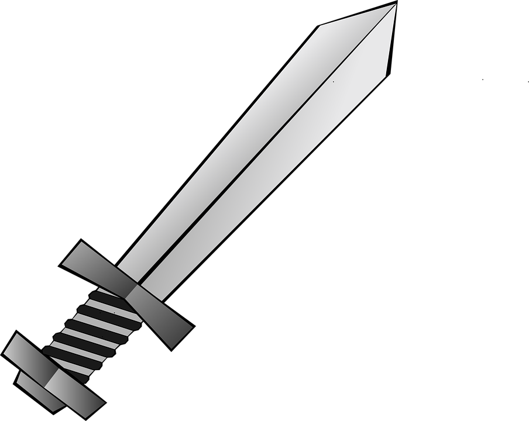
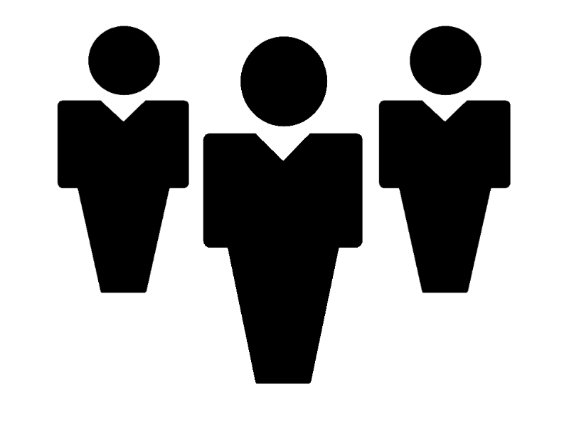

Powerful and Strong

A Modern Man

Popular with people
Powerful and Strong
A Modern Man
Popular with people
Henry VIII was born on the 28thJune 1491 and died on the 28th January 1547. He became King of England on the 21st April 1509 and reigned until his death in 1547. He won lots of wars and was powerful and popular. In 1534, Henry wanted to divorce his first wife, Catherine of Aragon, so that he could marry Anne Boleyn. The Pope however would not allow this so he set up his own church and named it the Church of England.
I think King Henry VIII was a modern man because he did lots of things other previous kings didn't. Henry liked science and astronomy and even set up his own church, this shows that he was actually quite a modern man.